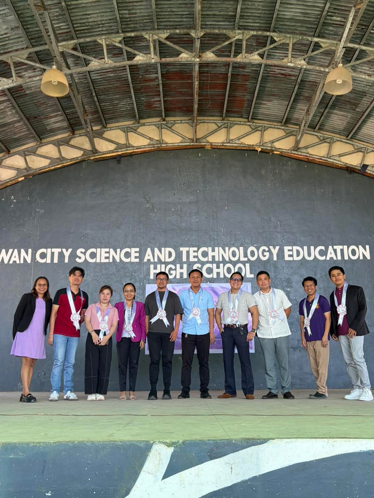

👩🏫 Teacher Trainings and Professional Learning
BCSTEC continuously invests in the professional growth of its teachers by encouraging participation in Division, Regional, and National trainings, seminars, conferences, webinars, Learning Action Cell (LAC) sessions, and the In-Service Training (INSET) Program. These opportunities equip teachers with updated knowledge, innovative teaching strategies, and best practices that enhance classroom instruction and learner achievement.
Professional Development Activities
- Division-Level Trainings
- Regional Trainings
- National Trainings
- Educational Conferences
- Webinars and Online Learning Sessions
- Learning Action Cell (LAC) Sessions
- In-Service Training (INSET)
- Professional Collaboration Activities

📚 Instructional Development
Continuous professional learning allows teachers to improve curriculum delivery and classroom practices. BCSTEC educators develop innovative instructional materials, integrate technology into teaching, conduct action research, and implement learner-centered strategies that promote critical thinking, creativity, and meaningful learning experiences.
Focus Areas
- Curriculum Enhancement
- ICT Integration in Teaching
- Contextualized Learning Resources
- Project-Based Learning
- Classroom Assessment
- Action Research
- Innovative Teaching Strategies

🎓 Graduate Studies
BCSTEC strongly encourages its teachers to pursue higher education as part of their commitment to lifelong learning and professional excellence. Graduate studies enable educators to deepen their knowledge, strengthen their teaching competencies, and contribute innovative ideas that enhance the quality of instruction and student learning.
Highlights
- Master's Degree Graduates
- Teachers Currently Taking Graduate Studies
- Continuing Professional Education
- Research and Academic Development
- Advanced Educational Leadership Training

📈 Teacher Promotions
The professional achievements of BCSTEC teachers are recognized through promotions that reflect their dedication, competence, and outstanding performance. These milestones inspire educators to continually improve and provide quality education for every learner.
Career Advancements
- Master Teacher II Promotions
- Master Teacher I Promotions
- Teacher III Promotions
- Recognition of Professional Excellence

🚀 Expanded Career Progression
BCSTEC supports the Department of Education's Expanded Career Progression System, providing teachers with greater opportunities for advancement based on their qualifications, experience, competencies, and professional performance. This initiative encourages continuous improvement while recognizing excellence in the teaching profession.
Career Opportunities
- Teacher I → Teacher III
- Teacher III → Teacher VI
- Career Progression Pathways
- Appointment and Reclassification
- Professional Growth Opportunities

🏅 Recognition of Excellence
The achievements of BCSTEC educators reflect their dedication to quality instruction, lifelong learning, and professional excellence. Through continuous capacity-building, graduate studies, and career advancement, teachers remain committed to providing high-quality education and meaningful learning experiences for every learner.
Highlights
- Continuous Professional Development
- Commitment to Lifelong Learning
- Recognition of Outstanding Performance
- Culture of Excellence and Innovation
- Strengthened Teaching Competence

🌟 Building Future-Ready Educators
BCSTEC continues to invest in its greatest resource— its teachers. By supporting professional development, graduate education, leadership opportunities, and career progression, the school ensures that every educator is equipped to respond to the evolving needs of education and inspire learners to achieve their highest potential.
These accomplishments demonstrate that BCSTEC is not only developing competent teachers but also building future-ready educational leaders who are committed to innovation, excellence, and lifelong service.